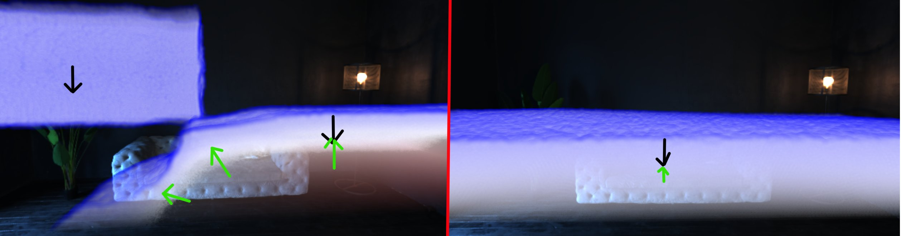

Category: GPU Computing / Real-time Simulation | Status: In progress Overview A CUDA-accelerated Weakly Compressible Smoothed Particle Hydrodynamics (WCSPH) single-fluid simulation that can render ~10 million particles at around 30 FPS on current-gen hardware (RTX 5080). A WCSPH simulation creates a fluid by moving many particles that represent small volumes of the fluid. These particles are moved by external forces like gravity, and each particle has an area of influence defined by a smoothing kernel function that represents the density the particle contributes to its surroundings. Particles are given corrective forces so that the combined density of all particles in the neighborhood approaches the target fluid density.  Debug view (left: unstable state; right: stable state). Areas with density higher than the target are shown in red; areas with density lower than the target are shown in blue. Black arrows are gravity(extrenal force), Green arrows represent the corrective forces that force the correct density(internal force) This simulates fluid-like behavior by modelling incompressibility. Besides incompressibility, there are other physical properties that real fluids have which are added to the simulation to make it more realistic, such as viscosity (internal friction of the fluid). These can also be modelled using SPH particles by adding additional forces based on the relative velocity of nearby particles. TODO I am currently working on further expanding it to support multiple mixable/soluble and non-soluble materials and solids (using primarily this paper: A divergence-free mixture model for multiphase fluids ). As that paper makes use of IISPH (Implicit Incompressible SPH) rather than WCSPH, I might also convert the simulation to IISPH depending on the impact that will have. I also still need to improve the volume renderer (also done in CUDA) that is used to visualize the particles as is currently a bit noisy and slow, even without supporting multiple ray bounces/reflections yet. And I am also aware of several other areas of the algorithm that could be improved upon in term of performance, but I will see first try to get the new functionality in place before optimizing further. But I will wait and see if I still have the motivation to add these after adding multi-material support as that is my main goal for this project currently. Recources Github repository link: https://github.com/Rsnelllenberg/CUDA-interactive-fluid-particles TODO: add video of the current simulation: I will probably do this once I have added multi-materials Technologies Used CUDA C++ CMake